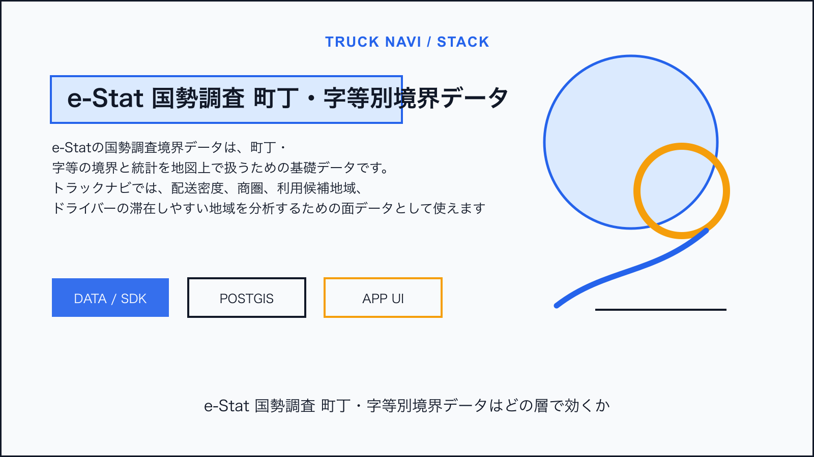
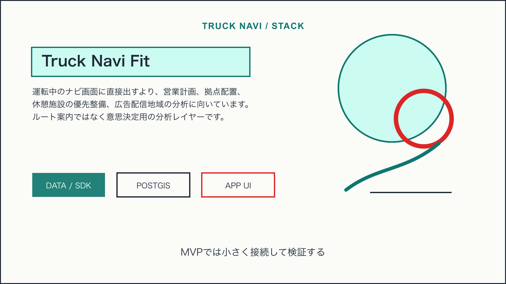
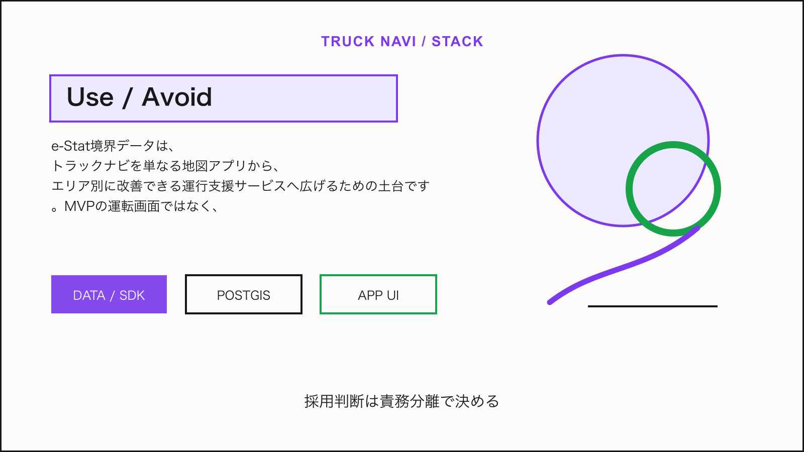

Tech Stack / Truck Navi
e-Stat国勢調査境界データを配送エリア分析に使う

この技術は何か
e-Statの国勢調査境界データは、町丁・字等の境界と統計を地図上で扱うための基礎データです。トラックナビでは、配送密度、商圏、利用候補地域、ドライバーの滞在しやすい地域を分析するための面データとして使えます。
NERV防災のライセンス情報から見える利用形態: 政府統計の総合窓口（e-Stat） 国勢調査 町丁・字等別境界データを加工して作成。
トラックナビで使えそうな理由
運転中のナビ画面に直接出すより、営業計画、拠点配置、休憩施設の優先整備、広告配信地域の分析に向いています。ルート案内ではなく意思決定用の分析レイヤーです。

アーキテクチャ上の置き場所
町丁・字等境界をPostGISに保存し、案件、走行ログ、休憩検索、未対応エリアを空間集計します。個人情報を扱わず、集計済みのメッシュや区域単位で可視化します。
Mobile App / Admin UI
↓
Truck Navi API
↓
PostGIS / business data
↓
Map, tile, weather, or device layer採用時の注意点
- 統計の時点と最新の道路・施設状況は一致しない
- 個人や特定事業者を推定できる粒度にしない
- 分析結果をルート安全判断の唯一の根拠にしない
結論
e-Stat境界データは、トラックナビを単なる地図アプリから、エリア別に改善できる運行支援サービスへ広げるための土台です。MVPの運転画面ではなく、管理者向け分析から入れるのがよいです。

Sources
この技術を使っていると表明しているサービス
- NERV防災は、提示されたライセンス情報上でe-Statの国勢調査町丁・字等別境界データを加工して作成していると表明している。